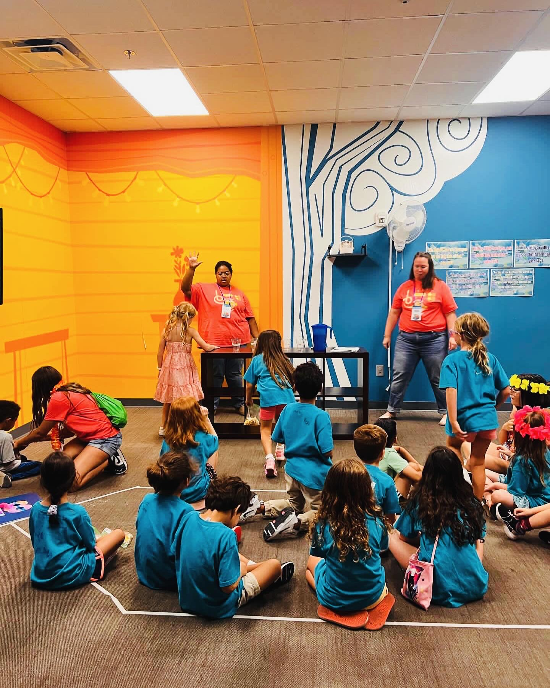

Designing for Impact: Education, Community & Social Good
Bringing systematic problem-solving and inclusive design thinking to organizations that serve students, communities, and underserved populations. Proven experience delivering measurable social impact through thoughtful product design.

I'm a product designer who specializes in mission-driven organizations—from school districts and universities to civic tech initiatives and nonprofit services. My approach combines rigorous research methodologies with inclusive design principles to deliver solutions that don't just work well technically, but create measurable social impact.
Whether I'm designing learning platforms for EdTech startups (Duolingo, Khan Academy, Course Hero), improving government services for City of Orlando and Orange County, building civic tech tools with Code for America, or ensuring digital accessibility for organizations serving underserved communities, I bring systematic thinking and demonstrably better outcomes. I don't just design interfaces; I architect experiences that make education more accessible, government more responsive, and nonprofit services more effective.